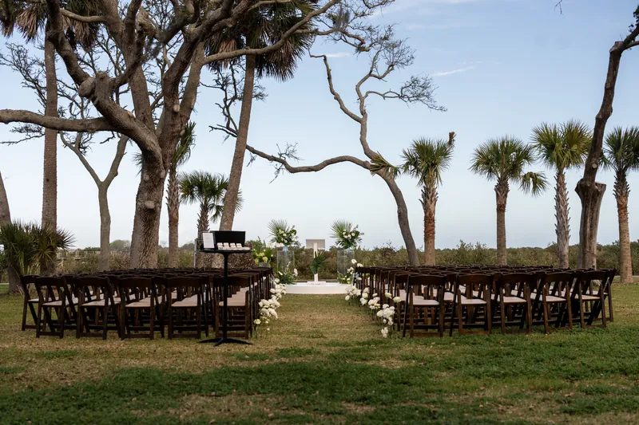
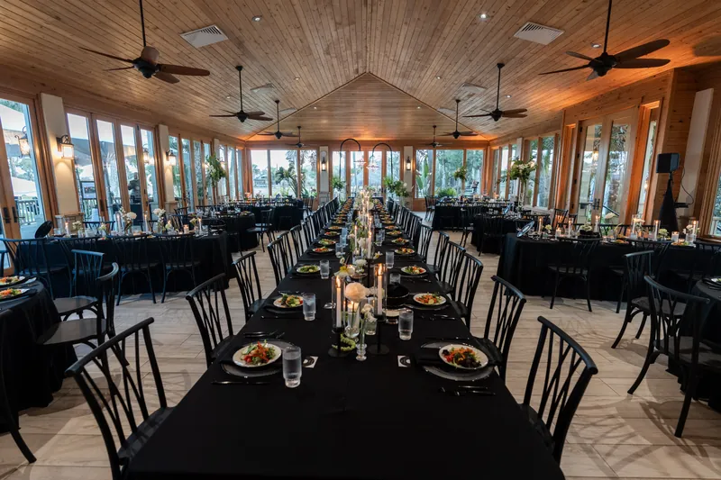
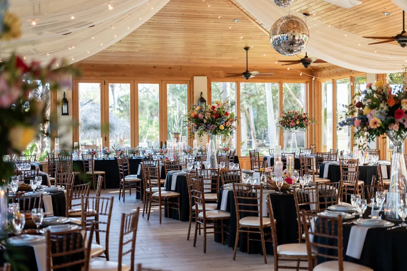

One of the oldest and most storied outdoor settings in St. Augustine — Matanzas Bay views, ancient grounds steeped in history, and a venue unlike anything else in Northeast Florida — here's what to know before booking your wedding or event at the Fountain of Youth.
The Fountain of Youth Archaeological Park occupies the site of the 1513 Spanish landing in St. Augustine — making it not just a wedding venue, but one of the most historically significant pieces of ground in the United States. The park sits on Matanzas Bay in the north end of St. Augustine's historic district, with waterfront views, ancient oak trees, and grounds that have been drawing visitors for centuries.
Private events at the Fountain of Youth take place on the park grounds, using the outdoor spaces and waterfront areas for ceremonies, receptions, and cocktail gatherings. Footloose Entertainment is on the Fountain of Youth's preferred vendor list and has provided entertainment for both weddings and corporate events there.

The Fountain of Youth offers multiple outdoor areas that can be configured for different event phases:
| Space | Capacity |
|---|---|
| Bayfront Event Lawn | Waterfront ceremonies and receptions, 100–300+ guests |
| Oak Grove Area | Shaded outdoor ceremonies, cocktail hour |
| Historic Grounds | Cocktail hour, reception overflow, unique photography settings |
The bayfront lawn with Matanzas Bay views is the signature event setting — couples face the water during ceremonies, and the park's ancient oaks frame the space. Multiple areas can be used across the evening for different phases.

A Fountain of Youth wedding typically begins with an outdoor ceremony on the bayfront lawn, with Matanzas Bay visible behind the couple and the park's oaks providing natural framing. After the ceremony, guests move to another area of the grounds for cocktail hour, and the reception follows in the main event area.
Because all event phases are outdoors, entertainment planning focuses on speaker placement, power access across the grounds, and weather contingency. Outdoor events require wireless microphone systems for ceremonies and speakers configured to cover open-air spaces without echo. We coordinate load-in and setup logistics with Fountain of Youth event staff before your wedding day.
Footloose Entertainment is on the Fountain of Youth's preferred vendor list and provides entertainment for both weddings and corporate events there. We already know the property — load-in access points, power availability across the grounds, and how to configure outdoor speaker systems on the bayfront.
Outdoor events on historic grounds require deliberate setup planning. Speaker placement, power runs, and any lighting equipment all need to be mapped before the event day. We walk through this with Fountain of Youth staff in advance so every phase of the evening is accounted for.
What we confirm before every Fountain of Youth Archaeological Park event: outdoor ceremony speaker placement and microphone plan, power access across the grounds, load-in timing, event phase transition plan, and any uplighting or special effects placement around the oaks and bayfront.
A photo booth works well at Fountain of Youth Archaeological Park. We plan placement during pre-event coordination so the booth is positioned where guests naturally circulate and stays active throughout the night.
Footloose Entertainment's DJ & MC packages start at $1,495, with final pricing shaped by guest count, hours of coverage, and any add-ons. See what's included or request a quote for your date.

Fountain of Youth Archaeological Park is also a popular choice for corporate events and company parties in the St. Augustine area. Footloose Entertainment provides DJ and entertainment services for corporate events at Fountain of Youth Archaeological Park including background music, MC-led programs, and full dance floor setups. See corporate event services or request a quote.
The outdoor grounds can accommodate events ranging from intimate gatherings of 50 to large events of 300 or more guests, depending on which areas of the park are used.
Yes — outdoor ceremonies on the bayfront lawn with Matanzas Bay views are one of the venue's most popular offerings. The park's historic grounds and oak canopy create a ceremony setting completely unlike any other in St. Augustine.
Footloose Entertainment is on the Fountain of Youth's preferred vendor list and has worked there for both weddings and corporate events. We know the property's power access and load-in logistics.
Yes. The park is a popular choice for corporate events, holiday parties, and client appreciation events in addition to weddings.
Yes — a photo booth works well either on a covered patio area or with the historic grounds as a backdrop. Placement is planned around the event layout and power access on site.
The Fountain of Youth is an outdoor venue, so weather planning is an important part of event coordination. We recommend confirming contingency plans with the venue when booking.